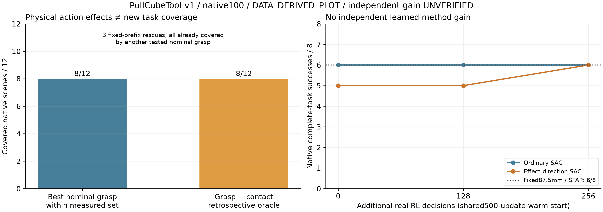
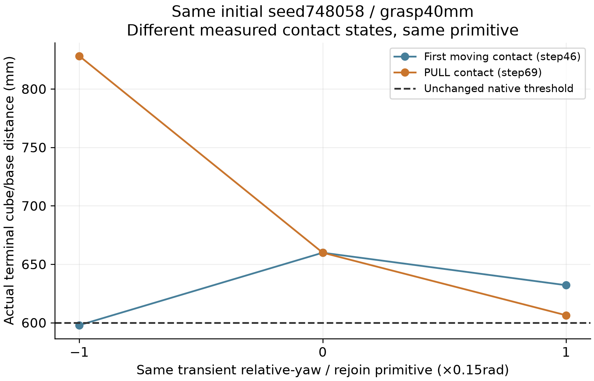
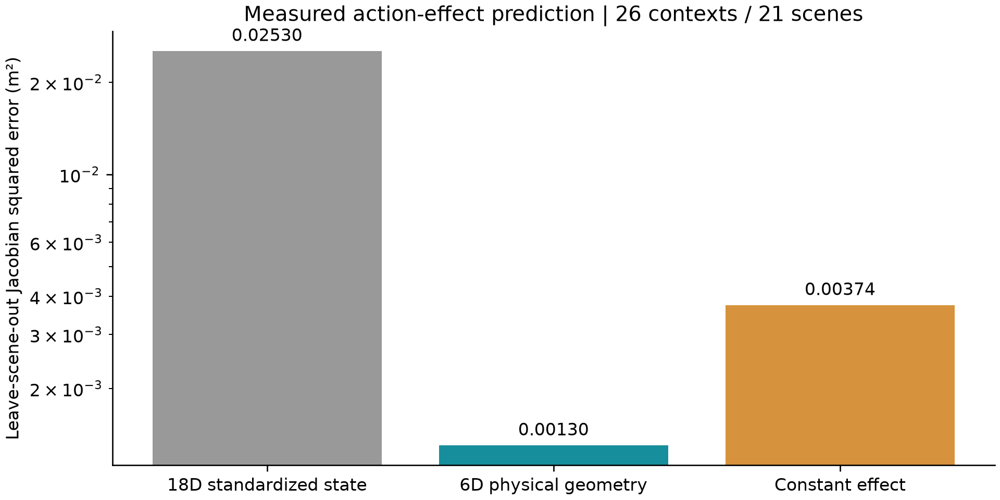
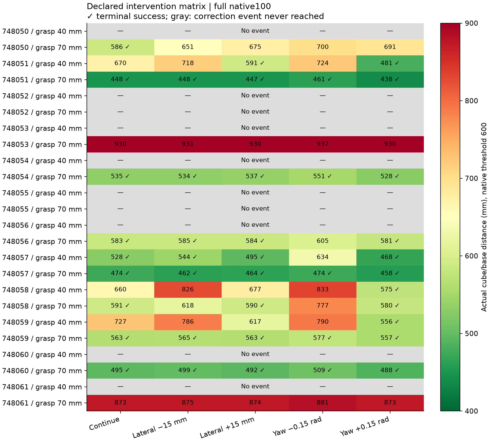

UNVERIFIED · 无独立 RL 方法增益
接触后确有物理作用；
有效方向预测尚未带来更好的完整任务策略。
ARES 单篇 SCI 研究 · EXP-003 · 2026-11-02 · official PullCubeTool-v1 / native100。仅公开物理仿真；ARES-R只读，无实机、无封存测试。

固定前缀中存在3个接触后救回，但新面板的场景覆盖仍是8/12；普通SAC、候选、固定87.5mm与STAP在8个开发初态均可达6/8。候选不构成独立增益。
不是858个独立测试场景。训练、单因素干预、配对重复和开发评估分开记录。固定87.5mm是后续机制诊断控制；这些开发初态不能再当封存测试。
完整物理回放 · 实际记录的100步
MEASURED_POSE_REPLAY：101帧＝初态+100个实测控制步，20fps；重渲染新增物理步为0。不是新实验或实机。两例来自已看训练诊断，不能替代群体结果。
后续实验排除了什么？

早期接触与PULL阶段的效果排序不同；已用同一个“修正后重接原航点”原语排除原先延续语义不同的混杂。8条零动作全程与原控制完全一致。时间与实际物理状态共同变化，不能只归因于时钟。

物理坐标特征改善了留一场景效果预测，但最佳方向轴仅19/22对18/22；预测改进不能替代完整任务增益。超参数选择使用训练场景，非独立预测测试。
接触时机原始审计 · 方向与幅值拆分 · 模型预测 vs 实际任务 · 熵与no-op投影的准确边界
真实结果与执行成本
| 阶段 | 方法 | 成功 | 回合 | 物理步 | 规划查询 |
|---|
| eval_offline | fixed105 | 4 | 8 | 800 | 247 |
| eval_offline | fixed70 | 4 | 8 | 800 | 268 |
| eval_offline | feedback | 4 | 8 | 800 | 255 |
| eval_offline | ordinary | 6 | 8 | 800 | 275 |
| eval_offline | conditional | 5 | 8 | 800 | 274 |
| eval_offline | global | 5 | 8 | 800 | 275 |
| eval_offline | generic_aux | 5 | 8 | 800 | 266 |
| eval_offline | supervised | 4 | 8 | 800 | 258 |
| eval_offline | stap | 6 | 8 | 800 | 264 |
| eval_online128 | ordinary | 6 | 8 | 800 | 275 |
| eval_online128 | conditional | 5 | 8 | 800 | 276 |
| eval_online256 | ordinary | 6 | 8 | 800 | 265 |
| eval_online256 | conditional | 6 | 8 | 800 | 276 |
| eval_online256 | fixed875 | 6 | 8 | 800 | 261 |
| eval_online256 | lookahead | 1 | 8 | 800 | 275 |
| eval_matched_prefix | fixed875 | 6 | 8 | 800 | 261 |
| eval_matched_prefix | ordinary | 6 | 8 | 800 | 275 |
| eval_matched_prefix | conditional | 6 | 8 | 800 | 275 |
全轮保留858个完整回合、85800个控制步，另有173个未完成回合控制步；SAC共3186次梯度迭代（actor/critic各一次），比较模型另有1000次联合优化。共同190回合离线数据全局只计一次。
在线普通/候选各256个有效决策；实际交互成本分别14170和14275控制步，并非完全相同。全局方向与通用辅助只比较共同500更新的离线阶段；没有冒称已完成它们的在线消融。单训练种子，未证明充分收敛或泛化。
结果CSV · 完整预算/配对统计/模型SHA · 研究结论与复现入口 · 原始证据包SHA
完整干预矩阵

灰行表示未达到PULL修正边界：参数被选择但没有执行。它们保留在完整任务分母中，不作为有效接触动作样本。全部前缀校验
代码、模型、控制器修复与负结果均保留；坐标学习已有LASER等先例，不能换名认作原创。 浏览器自动化禁止file协议：已通过编码、同步数据与静态图检查，但浏览器内点击/播放交互尚未自动验收。下一步必须增加最强控制之后的真实决策收益空间，不能仅扩大当前yaw训练。